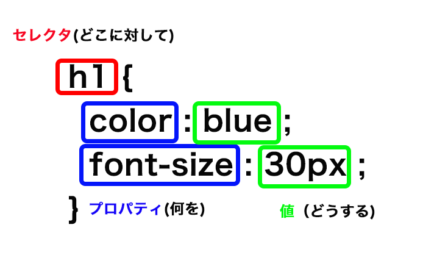

2日目講義内容
表示するフォルダの作成
css,images,js フォルダを作成し、そのフォルダの階層にhtmlファイルを置く
画像の埋め込み
<img src="images/nightImage.jpg" alt="幻想的な夜のイメージ" />
img src=でファイルのパスを指定。 altで視覚情報の名前を指定

youtubeの埋め込み
iframeタグを使って埋め込む
srcで参照先を指定する。
frameborder="0"で動画との境界線を消せる。デフォルト値は１
<iframe width="560" height="315" src="https://www.youtube.com/embed/GJgwzrxNn7E" frameborder="0" allow="accelerometer; autoplay; clipboard-write; encrypted-media; gyroscope; picture-in-picture" allowfullscreen></iframe>
インライン要素とブロック要素
- インライン要素
- ブロックではないので表示サイズに余裕があれば横並びで表示される。
- ブロック要素
- ブロック要素とはそれ自体でブロック（塊）を構成するタグ。ブロック要素ごとに開業される。
CSSとは
- CSSとは
- CSSとはCascading Style Seetの略でHTMLの見た目を装飾する
レスポンシブルデザインを作成する際のブラウザがつけているデザインをリセット
ブラウザでyahoo css resetなどと検索すると出てくるYUI library等からソースをコピーする。
<link rel="stylesheet" type="text/css" href="http://yui.yahooapis.com/2.9.0/build/reset/reset-min.css">
これを挿入することにより、ブラウザで表示されているデザインがリセットされる。
デザインの検証
表示されているブラウザ内で検証したい項目を右クリックし検証を押すと開発者用の検証画面が表示される。
検証画面で色変更や、サイズ変更等試せる。デザインを実際変える場合はCSSに手動で落とし込む
CSSの作り方

タグや属性、値等わからないことがあればMDNで検索
Webフォント
フォントは通常PC依存だが、表示させたいデザインがある場合はWEBフォントを使う。
Google Fonts + Japanese
CSSのサイズ
- widthのサイズ
- 文字のサイズ、これにpaddingやmarginを足したサイズが実際のコンテンツのサイズ
- 例： padding左右20px border 5pxの場合25pxがwidthのサイズに設定される。
今日の関数
- img srcタグ。インライン要素
- img画像を表示するタグ
srcでファイルのパス指定
- altタグ
- 画像がミスで表示されない際や、画像を表示しない設定にしてる際に表示されるテキスト
- altタグの中身をSEOが見るのでしっかりSEO対策で指定しよう
- iframeタグ
- 画像の埋め込みをする関数。インライン要素
- srcで参照先を指定すする。frameborderを0にすることで境界線を無くせる。デフォルト値は1
- allowfulscreenでユーザーの全画面表示を許可する
- div
- インライン要素をブロック要素に変えたり、複数の要素をひとまとめにするもの
- divタグの後ろには閉じるdivの名前をコメントで挿入する。複雑になってくると何を閉じているかわからないため
- linkタグ
- リンクする外部リソースを指定する際に使用する
- 後ろにrel属性で現在のファイルと外部ファイルとの関係性を示す
- href属性でリンク先のアドレスを指定する
- rel属性
- stylesheet スタイルシートをインポート
- help ……ヘルプへのリンクを指定
- など
- idタグ
- idタグはスタイルの指定に使えるが、同一ファイル内で一度しか使えない
- その要素に対して一意の設定をする際に使う
- idをCSSで作る際は#を頭につける
- 例：#favoriteword 等
CSS用語
- padding
- 内側の余白
-
- padding-left
- padding-right等
- width
- 幅
- border
- 罫線
- border-left:5px solid green;等、一括指定する
- CSSのコメント挿入
- /*コメント*/で囲む
- margin
- 余白の設定、最初の値が上下左右の順で指定。 2個指定の場合上下と左右。
- autoとすることで余白の値が自動で等間隔に調整され中央に配置される
- div container
- containerという名前のidでdivタグを使って全体を括る。
-
- 中央揃えする場合 width:任意 margin:0 autoで指定
- margin
- 余白の指定
- margin:上下 左右 と値を入れて指定
- margin:0 auto;と入力すると上下の余白0、左右は中央に表示される。
- margin:上 右 下 左 と4つ値を指定した場合は時計回り。
- 3つ指定した場合は 上 左右 下
- 個別指定の際はmargin-top right bottom leftとする。
- width
- 要素の幅 指定方法はmargin等と同じ
- %指定も可能 90%なら要素内の90%を使う。
- text-align
- 自分の中に入っているテキストの位置。 centerなら中央、leftなら左に揃う。
- border-radius
- ボーダーの丸みの半径。 大きくすれば角が取れて丸くなる
- text-shadow
- 文字の影が指定できる
- text-shadow:1px 1px 0 上1px 左右1px 下0pxの影ができる
- CSSのスタイルの記述について
- th,td{ と指定することで両方の要素に後の条件を反映することが出来る。
- 最初の要素、最後の要素のみの指定
- 例えばtr要素内の最初の要素、最後の要素のみを指定する場合
tr *:first-child{ と記述して後ろに条件を記載することでtr内の最初の要素にスタイルが適用される
- tr *:last-child{ と記述して後ろに条件を記載することでtr内の最後の要素にスタイルが適用される
用語
- 相対パス
- ソースが存在する位置から見たファイル場所の指定法
- ホームページ等の場合サーバーが変わったりするので、絶対パスの場合すべてのパスを変更しなければならなくらる。
- 絶対パス
- 絶対パスとは最上層のファイルから参照するファイルまで全てを記載する書き方